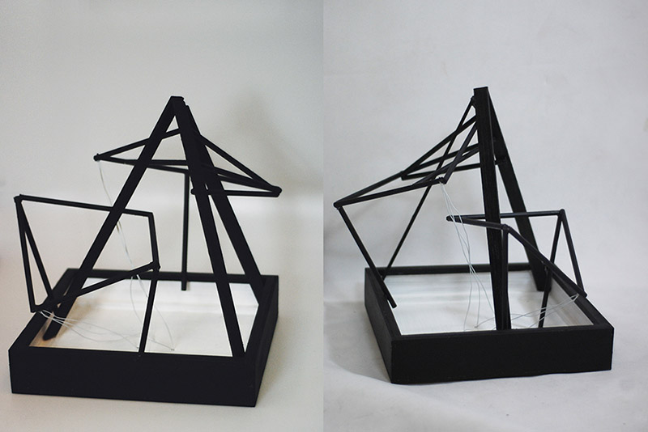
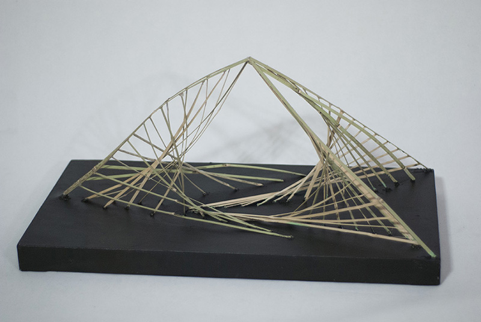
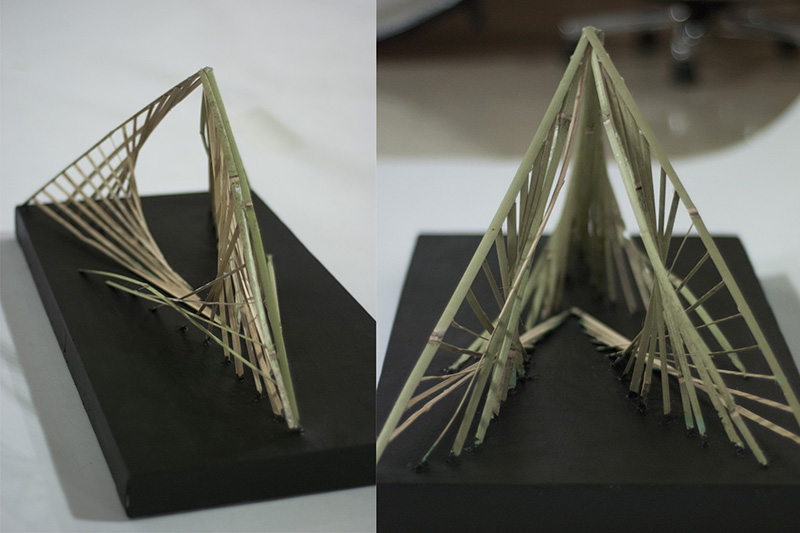
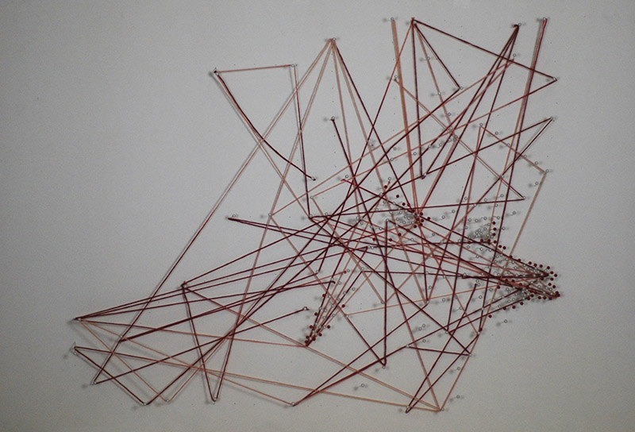
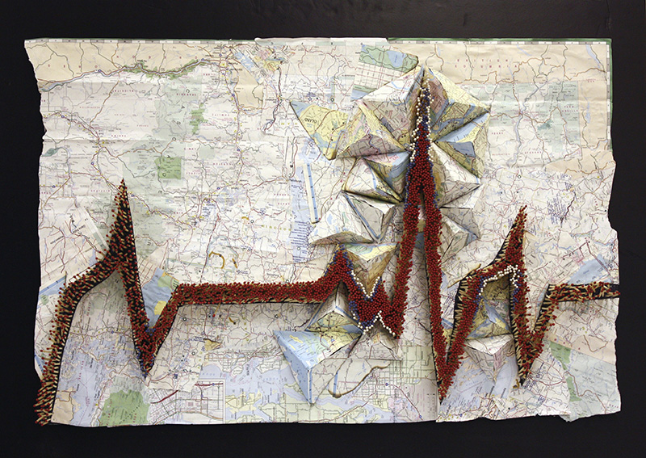
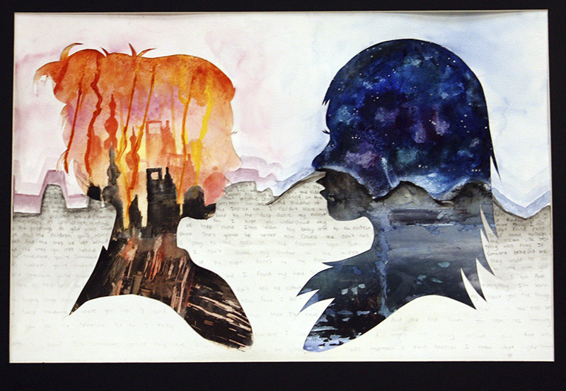
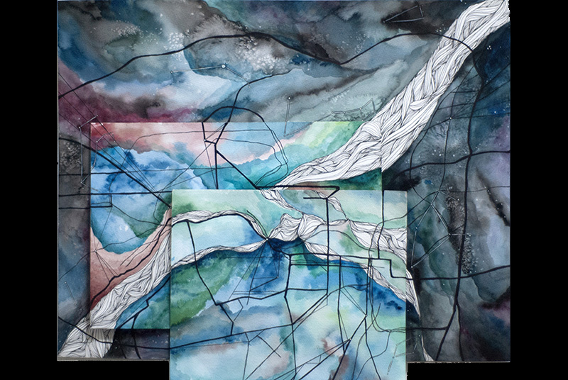

"Intertwined" / sculpture made of pencils, wood, and wire
"Disparity" / sculpture made of bamboo on canvas
Closeup of "Disparity""Mountain Sound" / relief made of pins and threadCloseup of "Mountain Sound"
"14/329" / relief made of pins and threadCloseup of "14/329""Oh Deer" / acrylic painting
"Earthbeat" / relief made of matches, map, and styrofoam
"Wanderlust" / mixed medium piece made of watercolor and photo transferred images
"Hearth" / relief made of pen, watercolor, and styrofoamPoster Designs"Quintessential I" / photograph"Shanghai" / photograph"Eternal Restriction I" / photograph"Eternal Restriction II" / photograph«»